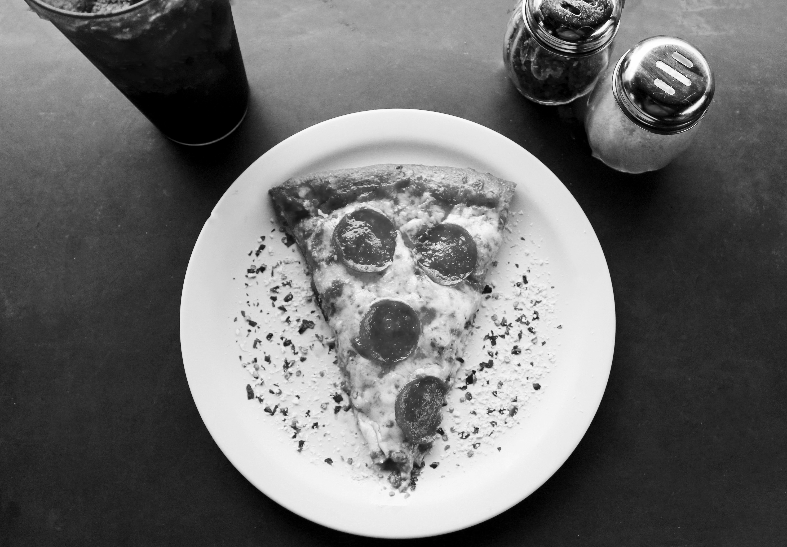

Pizza

One of the best pizza dough recipes. Made by combining recipes by "Joy of Cooking"
and "Cook's Illustrated's The Best Recipe". This recipe can make two 12 inch pizzas.
Recommendations
- Measure flour by weight for consistency.
- Let pizza dough rise overnight up to 48 hours.
- If refridgerated, let rest for at least an hour.
- Let dough rest 5 minutes in between stretching.
Pizza Dough Ingredients
- 1 1/2 cups warm water
- 1 package active dry yeast
- 3 3/4 cups bread flour
- 2 tablespoons extra virgin olive oil
- 2 teaspoons kosher salt
- 1 teaspoon sugar
Pizza Ingredients and Toppings
- Extra virgin olive oil
- Cornmeal
- Tomato sauce
- Firm mozzerella
- Fresh soft mozzerella, small clumps
- Fontina Cheese, grated
- Parmensan cheese, grated
- Feta cheese, crumbled
- Mushrooms, thin slices
- Bell peppers, very thinly sliced
- Italian pepperoncini, thin sliced
- Italian sausage, cooked and crumbled
- sliced black olives
- Chopped fresh basil
- Baby arugula
- Pesto
- Pepperoni, thin sliced
- Onions, thinly sliced or carmelied
- Ham, thinly sliced
Pizza Dough Instruction
- Place the yeast in the warm water
- Sprinkle sugar and let sit for 5 minutes
- Add flour, salt, sugar, and olive oil and mix at low sleep
- Knead the pizza dough on low to medium for 7-10 minutes
- Spread thin layer of olive oil inside a large bowl
- Place pizza in the bowl then turn around so it get coated in oil
- Cover the dough and let rise using prefered time
Pizza Recipe Instructions
- Preheat the pizza stone or pan or sheet at 475 degrees for 30 minutes - one hour
- Divide the dough into two balls
- place each ball it its own bowl, cover with plastic, and let sit for 15 minutes
- Prep desired toppings
- Flatten ball of dough on lightly floured surface
- Start at the center and work outwards to 1/2 inch thickness
- Let the doug relax 5 minutes then comtinue to stretch
- Brush the dough top with olive oil
- Let rest for 10-15 minutes
- Sprinkle pizza peel ot baking sheet with cornmeal
- Spread with tomatoe sauce and spinkle toppings
- Bake at 450 degrees until crust is browned and cheese is golden, 10 - 15 minutes